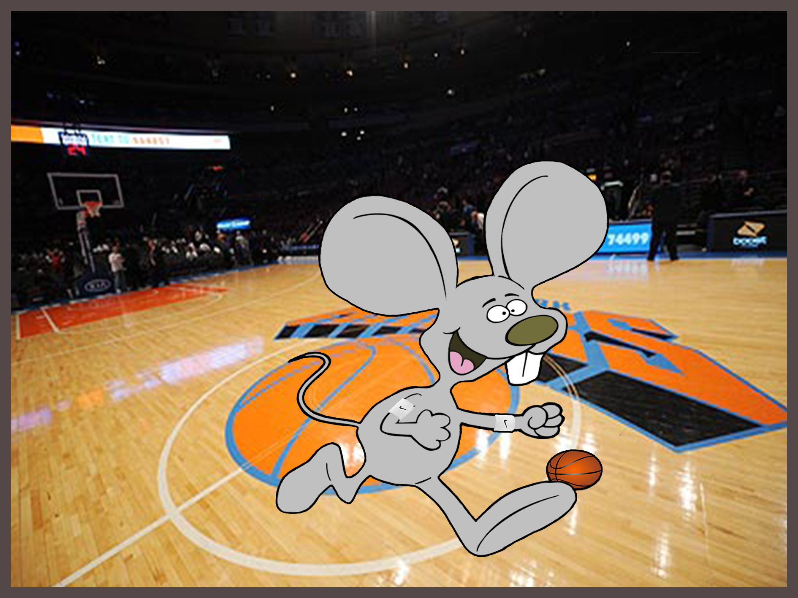

Connect The Dots
בעבודה זו לקחתי תמונה ריקה שבה נדרשתי לחבר את הנקודות וליצור את התמונה הכללית שהסתתרה, ולבסוף התגלה עכבר שמח שרץ.

לקחתי תמונה זו, ויצרתי ממנה תמונה חדשה לגמרי. בתמונה החדשה רואים כי העכבר נמצא במגרש כדורסל ומכדרר.
